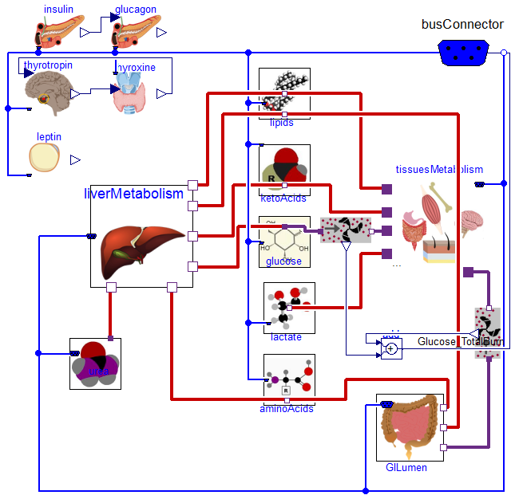

View on GitHub
Physiomodel 1.0.0
Nutrients and metabolism
Download this project as a .zip file
Download this project as a tar.gz file

Please enable JavaScript to view the
comments powered by Disqus.
comments powered by
Disqus